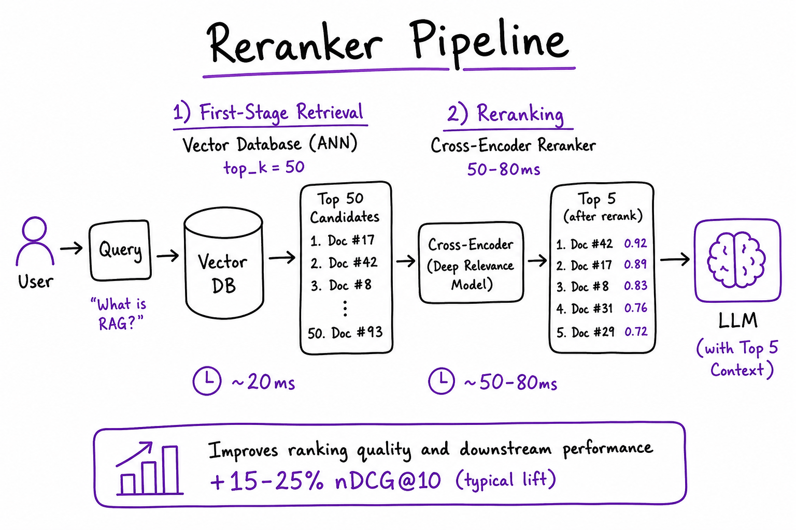
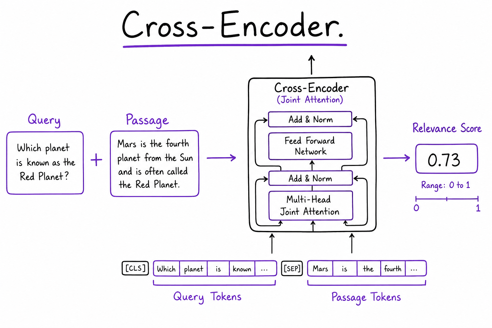
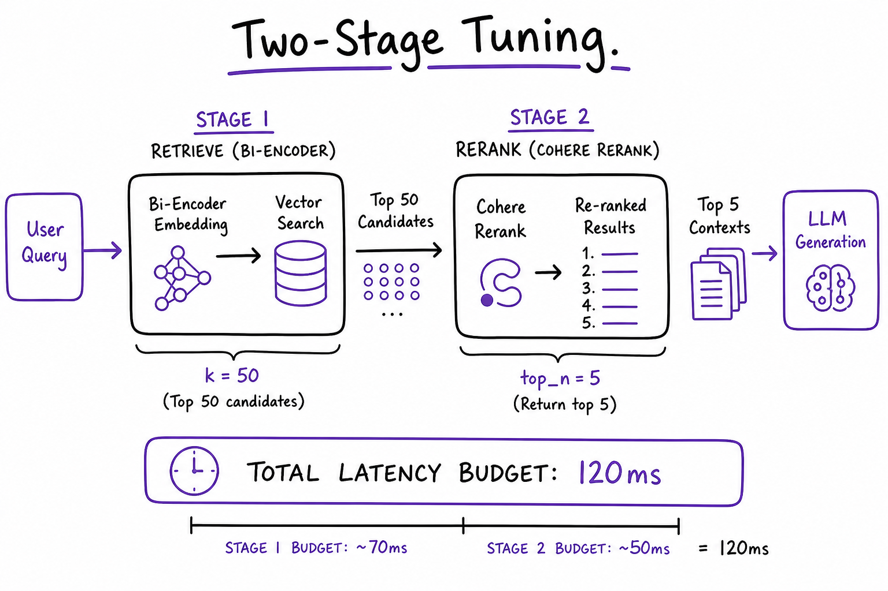

Reranking // Knowledge & RAG
Cross-encoder rerankers: retrieve wide, rescore, keep the best few.
01 — At a glance
Two-stage retrieval for production RAG: bi-encoder pulls top-50 from your vector database fast, cross-encoder reranker scores query-passage pairs with joint attention, then top-5 chunks go to the LLM. Standard +15–25% nDCG precision boost after ANN recall.

Two-stage pipeline: Vector search & databases top_k=50 (~20 ms) → cross-encoder rerank (~50–80 ms for 50 pairs) → top 5 chunks to LLM. Typical +15–25% nDCG vs bi-encoder alone in The RAG pipeline stacks.
Quick reference
02 — What & Why
Rerankers solve the precision gap left by bi-encoder retrieval. Embeddings compare query and document vectors independently — fast but shallow. Cross-encoders run one transformer over the concatenated [query, passage] pair with full cross-attention — accurate but O(n) at query time. Industry standard: retrieve wide (k=50), rerank narrow (n=5).
Functional requirements
- Accept query + list of candidate passage texts (from ANN or hybrid fusion)
- Return relevance scores and top_n ranked passages
- Support batch scoring of pairs on GPU for latency
- Optional score threshold to drop irrelevant chunks (reduce hallucination)
- Fallback to ANN order on timeout
Non-functional requirements
- Latency: retrieve + rerank < 150 ms p99 for interactive RAG
- Quality: +10–25% nDCG@5 vs ANN-only on golden set
- Availability: degrade gracefully if reranker down
- Language: match reranker to query corpus language
Stack position: After Choosing an embedding model + Vector search & databases (+ optional hybrid). Before LLM prompt assembly in The RAG pipeline.
03 — Core Concepts
| Term | Definition | Gotcha |
|---|---|---|
| Bi-encoder | Separate query/doc embeddings; cosine ANN | Retrieval stage only; see Choosing an embedding model |
| Cross-encoder | Single model on [query, passage] | Cannot pre-index doc side |
| retrieve_k | ANN candidates before rerank (20–100) | Too low = miss gold doc; too high = latency |
| rerank_n | Passages passed to LLM (3–8) | More context = higher LLM cost/latency |
| nDCG@k | Normalized discounted cumulative gain | Primary offline metric for rerank A/B |
| Score threshold | Drop passages below e.g. 0.3 | Reduces noise; may over-filter short queries |
| Lite rerank | ms-marco-MiniLM on CPU | Dev only; not prod p99 at k=50 |
04 — API / Interface Surface
# Cohere Rerank — hosted, zero GPU ops
import cohere
co = cohere.Client()
result = co.rerank(
model="rerank-english-v3.0",
query=user_question,
documents=passage_texts, # top_k from vector DB
top_n=5,
return_documents=True,
)
for hit in result.results:
print(hit.index, hit.relevance_score, hit.document.text)
# Local cross-encoder — bge-reranker on GPU
from sentence_transformers import CrossEncoder
ce = CrossEncoder("BAAI/bge-reranker-v2-m3", max_length=512)
pairs = [[query, p] for p in passages]
scores = ce.predict(pairs, batch_size=32)
ranked = sorted(zip(passages, scores), key=lambda x: -x[1])[:5]
| API | Input | Output |
|---|---|---|
Cohere rerank | query, documents[], top_n | results[].relevance_score, index |
CrossEncoder predict | List of [query, doc] pairs | Float scores per pair |
| Jina / Voyage rerank API | Same shape as Cohere | Hosted alternative |
05 — When to Use / When NOT
| Scenario | Rerank? | Alternative |
|---|---|---|
| Production RAG Q&A | Yes — default stack | Only if hard <100 ms SLA |
| After hybrid BM25+vector | Yes — hybrid fixes recall; rerank fixes precision | Skipping rerank leaves fused-list noise |
| Tiny corpus (<500 docs) | Maybe | Full cross-encoder scan acceptable |
| Sub-100 ms total retrieve SLA | No / lite | Bi-encoder only; smaller k |
| Batch offline indexing | No | Rerank is query-time only |
06 — Architecture
User Query
|
v
+----------+ +----------------+ +-------------+ +-----+
| Embed | --> | Vector DB | --> | Reranker | --> | LLM |
| query | | top_k=50 | | top_n=5 | | |
+----------+ +----------------+ +-------------+ +-----+
^ | |
| | hybrid optional | scores logged
+--------------------+---------------------+
The RAG pipeline07 — Cross-Encoder Deep Dive

Cross-encoder joint attention on [query, passage] token sequence; outputs single relevance score 0–1. Cannot pre-compute document representations.
Bi-encoder: sim(embed(q), embed(d)) — dot product of independent vectors. Cross-encoder: score(q, d) = softmax(Transformer([CLS] q [SEP] d)) — every query token attends to every doc token.
- Why slower: 50 passages = 50 forward passes (batched on GPU)
- Why better: Captures term overlap, negation, entity match bi-encoder misses
- Max length: typically 512 tokens combined; truncate long chunks with head+tail
Interview one-liner: Retrieve with bi-encoder (indexable); rerank with cross-encoder (query-time). Never scan full corpus with cross-encoder.
08 — Model Comparison
| Model | Host | Language | Notes |
|---|---|---|---|
| Cohere rerank-english-v3.0 | API | English | Zero ops; ~100–200 ms for 50 docs |
| Cohere rerank-multilingual-v3.0 | API | 100+ langs | Match embed-multilingual stack |
| bge-reranker-v2-m3 | Self GPU | Multilingual | Best OSS; batch on A10 |
| ms-marco-MiniLM-L-6-v2 | CPU/GPU | English | Fast dev; weaker on hard sets |
09 — Pipeline Tuning

Pipeline tuning: sweep retrieve_k ∈ {20, 50, 100} and rerank_n ∈ {3, 5, 8}; plot nDCG@5 vs total latency; sweet spot often k=50, n=5 under 120 ms budget.
# Grid search on golden set (offline)
for k in [20, 50, 100]:
for n in [3, 5, 8]:
ndcg = eval_pipeline(retrieve_k=k, rerank_n=n)
lat = measure_p99_latency(k, n)
print(k, n, ndcg, lat)
- If recall@50 low on eval → increase k or fix Choosing an embedding model/chunking first
- If latency high → decrease k or GPU batch tune; consider Cohere vs local
- Diminishing returns above k=50 for most corpora <10M chunks
10 — Latency Budget
| Stage | Typical p99 | Knobs |
|---|---|---|
| Query embed | 10–30 ms | Cache query vector |
| Vector ANN k=50 | 15–40 ms | HNSW ef_search; warm index |
| Cross-encoder 50 pairs GPU | 50–80 ms | batch_size=32; A10/L4 |
| Cohere rerank API | 100–200 ms | Network; reduce k |
| Total retrieve stage | <150 ms | Profile per component in traces |
11 — Hosted vs Self-Host
| Cohere / Jina API | bge-reranker GPU | |
|---|---|---|
| Ops | Zero | K8s GPU pool, model load |
| Cost at low QPS | Cheaper | GPU always-on expensive |
| Cost at high QPS | Per-call adds up | Fixed GPU $/hour wins |
| Air-gap | No | Yes |
| Latency | Network overhead | In-VPC 50–80 ms |
12 — Full RAG Retrieve Example
Complete retrieve + rerank stage wired into a RAG orchestrator. Traces each step for Observability.
import cohere
from openai import OpenAI
from langsmith import traceable
co = cohere.Client()
oai = OpenAI()
RETRIEVE_K = 50
RERANK_N = 5
SCORE_FLOOR = 0.28
@traceable(name="retrieve_and_rerank")
def retrieve_and_rerank(query: str, namespace: str):
# 1) Embed query (same model as ingest — see embedding-models sheet)
q_vec = oai.embeddings.create(
model="text-embedding-3-small",
input=[query],
dimensions=512,
).data[0].embedding
# 2) ANN from vector DB
ann = vector_db.query(
namespace=namespace,
vector=q_vec,
top_k=RETRIEVE_K,
include_metadata=True,
)
passages = [h.metadata["text"] for h in ann.matches]
# 3) Cross-encoder rerank
reranked = co.rerank(
model="rerank-english-v3.0",
query=query,
documents=passages,
top_n=RERANK_N,
)
# 4) Score threshold — drop irrelevant chunks
results = []
for hit in reranked.results:
if hit.relevance_score >= SCORE_FLOOR:
results.append({
"text": passages[hit.index],
"score": hit.relevance_score,
"chunk_id": ann.matches[hit.index].id,
})
if not results:
# Fallback: ANN top-3 if rerank filters everything
results = [{"text": passages[i], "score": None} for i in range(3)]
return resultsThe full explanation
13 — Recap
Retrieve wide (top 20–50, cheap bi-encoder + BM25), then rescore with a cross-encoder (e.g. bge-reranker, Cohere Rerank) that reads query and chunk together, keep the top 3–8. Typically the biggest single precision gain, at 50–200 ms of added latency. An LLM can also rerank, slower and pricier.
In production
14 — Production & Ops
| Concern | Practice |
|---|---|
| Fallback | On reranker timeout >200 ms return ANN top-5; alert SRE |
| Logging | Log all 50 scores + final order; detect drift (mean score drop) |
| A/B | Shadow new reranker model; compare nDCG on sampled traffic |
| Tracing | LangSmith span rerank with input indices + scores output |
| Autoscale | GPU HPA on queue depth; min replicas >0 (cold start ~30s) |
16 — Where people get lost
- Rerank 200+ passages — GPU/API timeout; cap k at 50–100
- Skip rerank because hybrid exists — hybrid improves recall, not final precision
- Wrong language model — English reranker on multilingual queries
- No fallback — reranker outage blocks entire RAG path
- Ignore score threshold — passing irrelevant chunk #5 causes hallucination
- Truncate query not passage — cross-encoder max_length applies to pair
17 — How this connects
Builds on
- Choosing an embedding model — Model families, dimensions, benchmarks, cost, and when to fine-tune or switch.
- Vector search & databases — Exact and approximate nearest neighbours, HNSW and IVF, and choosing a vector database.
- The RAG pipeline — Retrieve, augment, generate: every stage from a question to a grounded, cited answer.
- Hybrid search & query understanding — BM25 plus vectors fused with RRF, query rewriting, decomposition and HyDE.
Where this shows up later
- LangChain — Chains, runnables, retrievers and the integrations layer.
- LlamaIndex — Data-first RAG framework: loaders, indexes, query engines.
- pgvector — Vector search inside Postgres: HNSW/IVFFlat, hybrid with full-text, operations.
- Pinecone — Managed serverless vector database: namespaces, metadata filters, hybrid.
- Weaviate — Open-source vector database with modules, hybrid search and multi-tenancy.